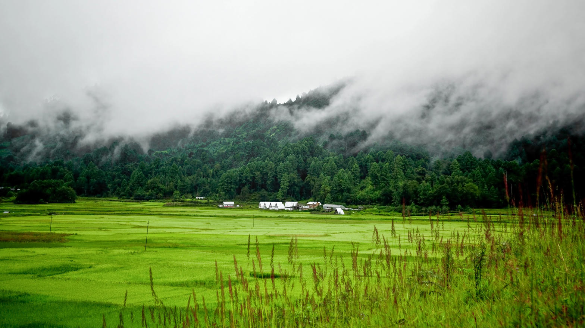

A river bent through green hills, far from the Tawang road
Mechuka sits on the Yargyap Chu, a wide green trough with a small airstrip, a hillside gompa and villages that still feel like the end of the road. It is not on the way to anywhere else you are likely to visit. That is the point. Reach it as its own 5–7 day journey, with buffer time for the drive.
Days here are walks, river light and one monastery morning — not a packed list. Winter is cold and beautiful; monsoon makes the last road unpredictable. Book rooms before you travel; the valley is small.

The hills green and the river runs clear.
Lush, wet and slow — only with spare days.
The month most first visits should aim for.
Cold, open views and a very quiet town.



Tell us how many days you have from Guwahati. We will say whether Mechuka fits this trip or should wait for a second Arunachal week.